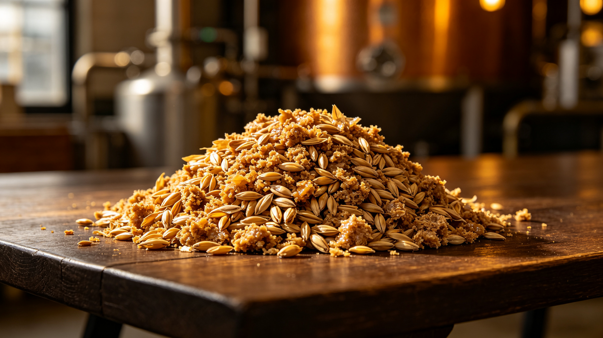

啤酒酿造副产物麦糟 —— 每年约 700 万吨的“被低估原料”麦糟干燥最佳方案已确定，下一阶段进入单因素实验。
课题名称：啤酒麦糟饼干的工艺优化及其品质特性与体外功能评价
啤酒糟（Brewers' Spent Grain, BSG）是啤酒酿造经糖化、过滤后剩余的麦芽皮壳与未溶解胚乳残渣，占全部酿造副产物总重的 85% 左右。按 2024 年我国规模以上啤酒企业产量 3521.3 万千升测算，每年产生的湿麦糟在 700 万吨上下——其中绝大多数仍以每吨数百元的低价流向饲料厂，甚至就地废弃。
麦糟干基蛋白质约 20%–30%、总膳食纤维 45%–70%，并富含以阿魏酸为代表的结合态酚酸（典型值约 336 mg/100 g 干物质）。本课题系统建立麦糟饼干“配方—品质—功能”的量化关系，为高纤维烘焙制品的配方设计提供可复用的方法学范式。
基础配方已确定，正开展麦糟添加量单因素实验